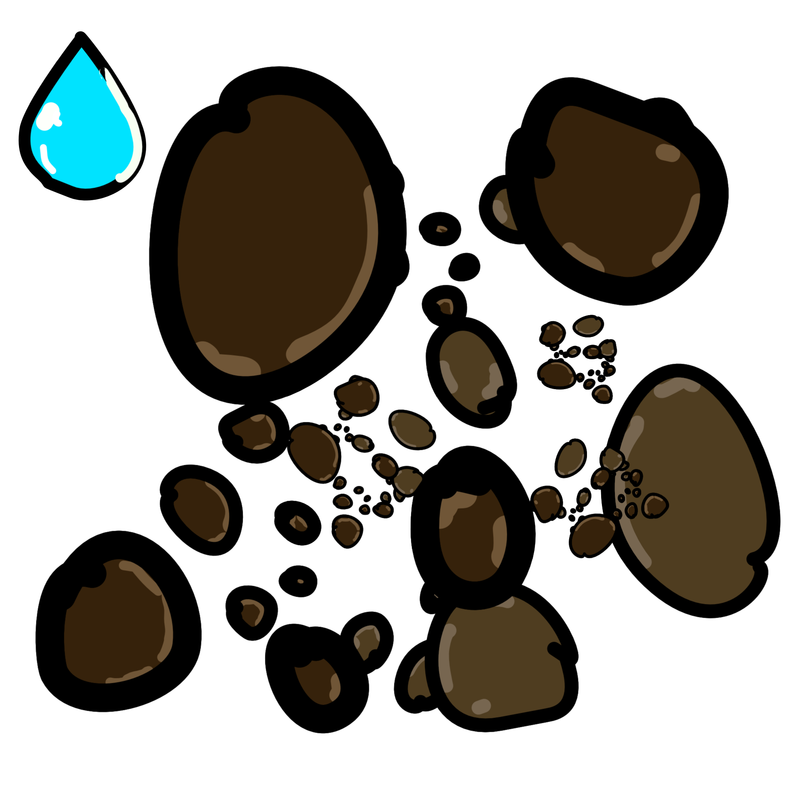
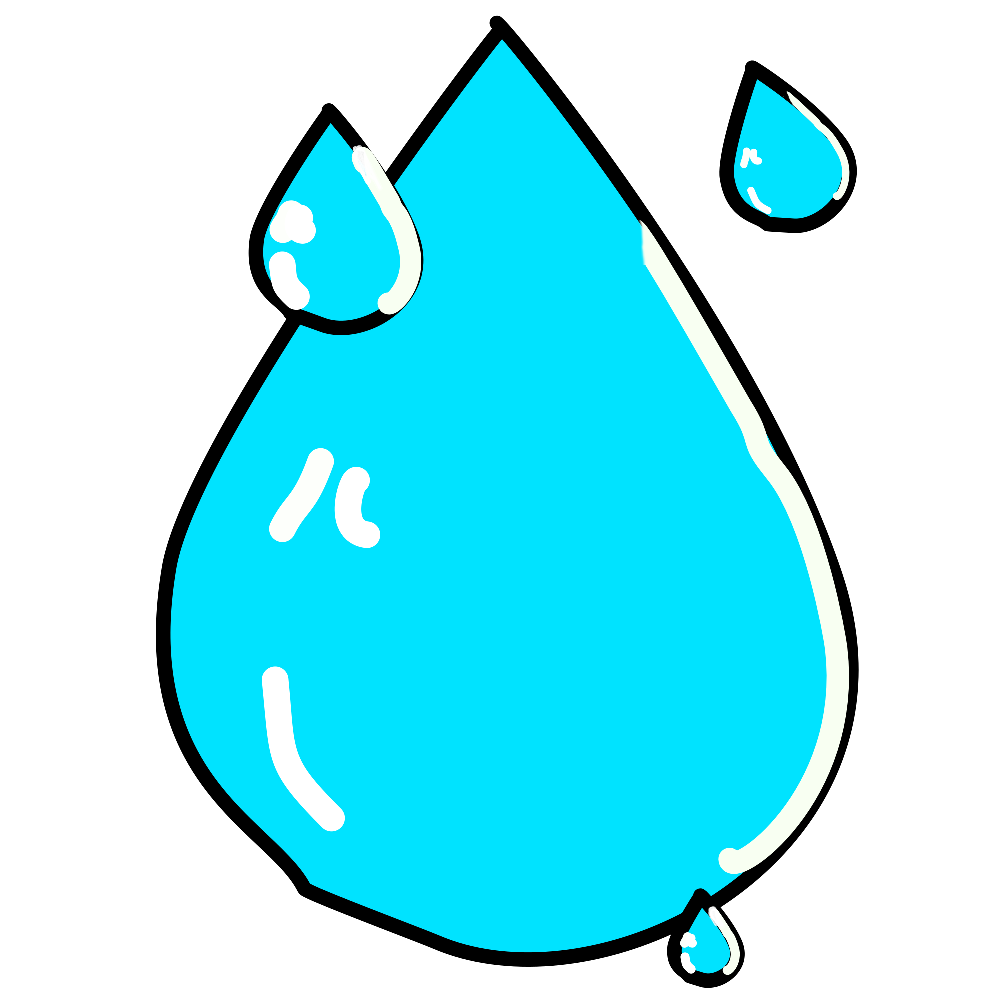

How increasing trees and foliage will lead to stabilised rainfall and reduced flooding.

When the climate's unpredictable, few know that they can increase their chance of rainfall by
planting trees.
Developing an easy to understand interface and combining predictive modelling with data from NASA,
RainRoots enables farmers to ensure security and stability for their future generations, and to
consider
not what the rain can do for their farm, but what their farm can do for the rain.